We hadn't booked ahead so could not take the Blue Mountain Railway train and, instead, had to take a cramped bus up to Ooty (Udhagamandalam). The railway is very pretty, taking seven years to build, finishing in 1898. Along its route are 13 tunnels, 19 bridges (see below) and 11 stations. Quite different from the toy trains found in places like Shimla and Darjeeling in northern India, the Blue Mountain train has a unique pinion rack system, with the locomotive pushing, rather than pulling, the carriages.. !
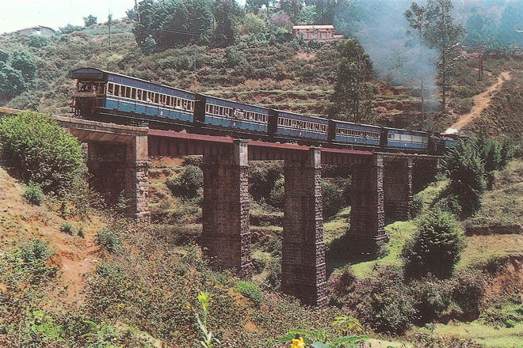
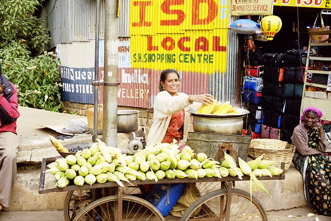
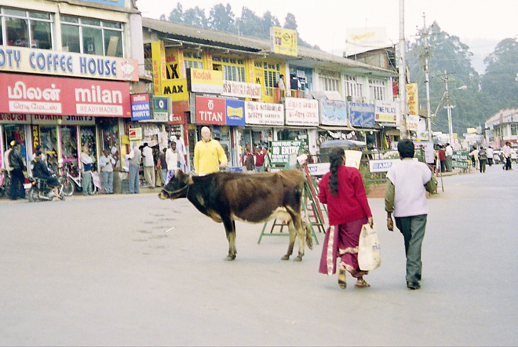
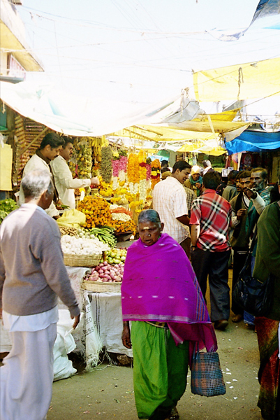
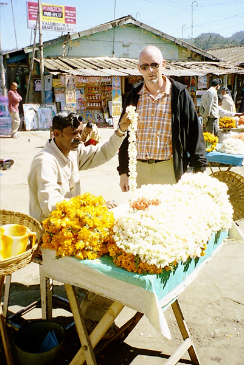
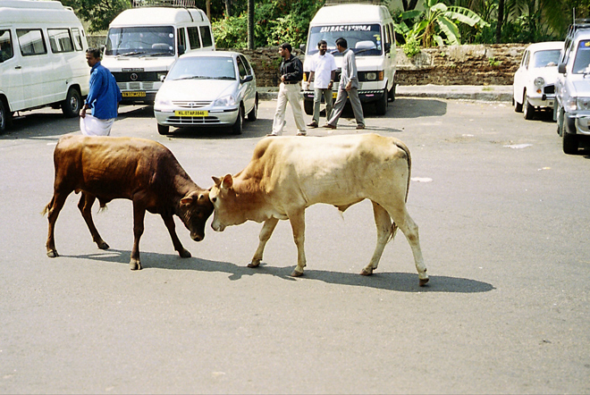
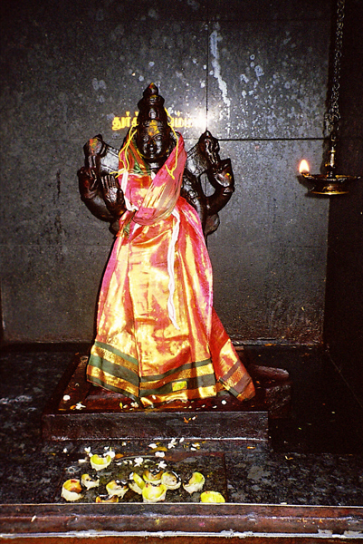
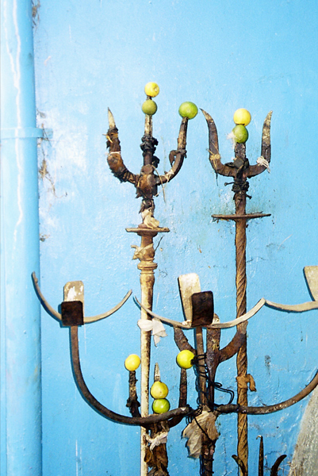
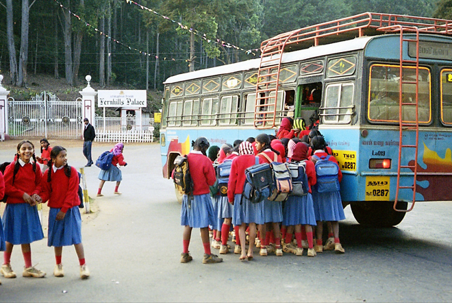
!We stayed at the Nilgiri Woodlands Hotel, a Raj-era hotel which had seen better days. The place needed some maintenance and the plumbing was due for retirement but it had an alluring character and pretty manicured gardens. It also harboured unwelcome guests: we were awoken in the night by rats scuttling around under the floorboards of our chalet room.. !
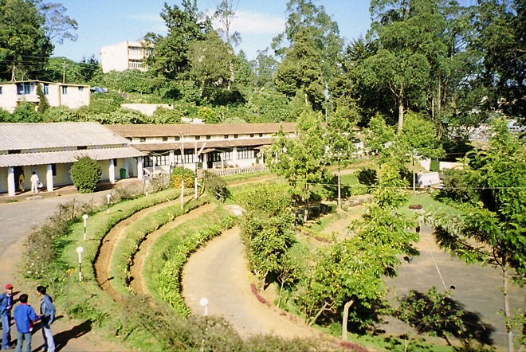
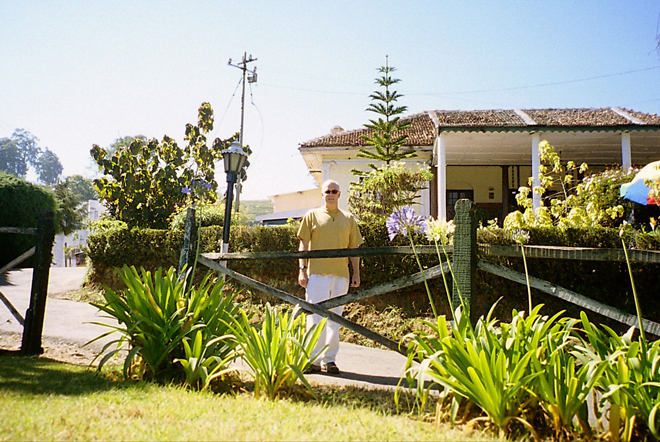
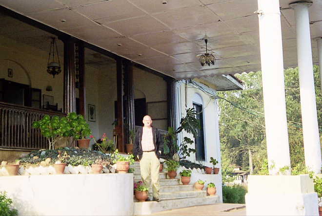
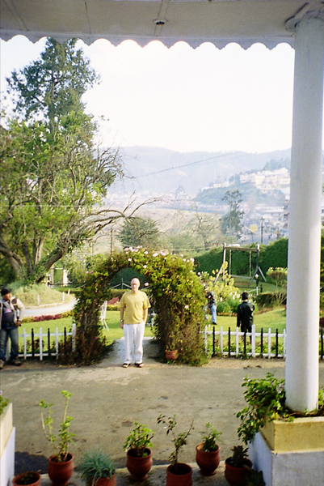
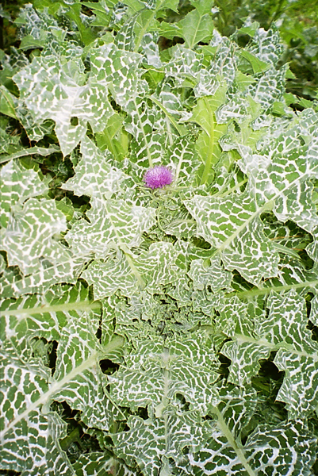
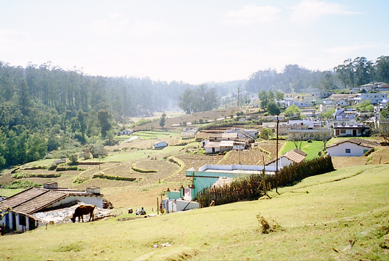
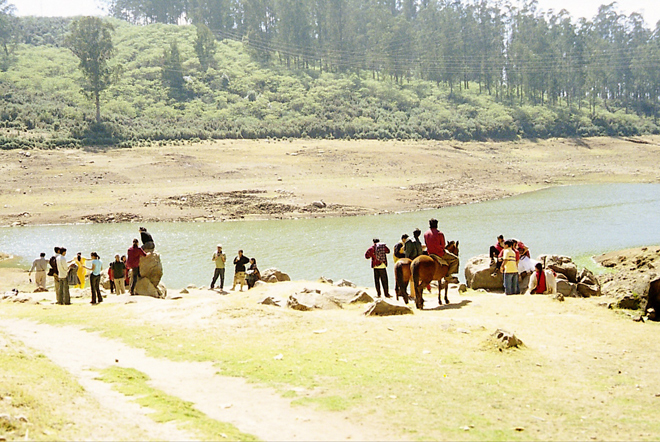
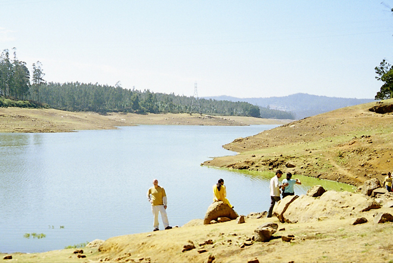
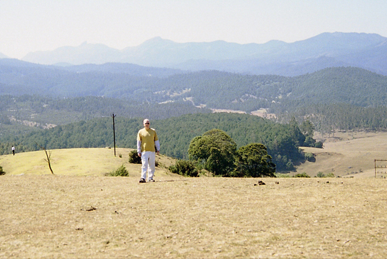
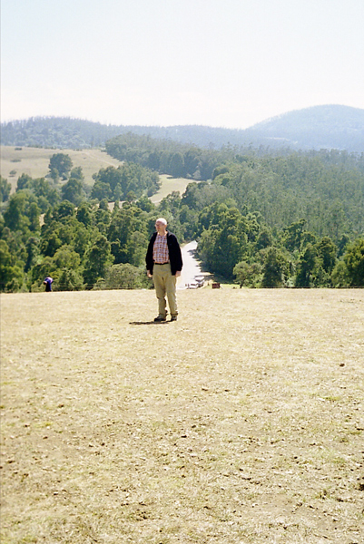
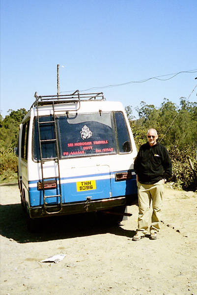
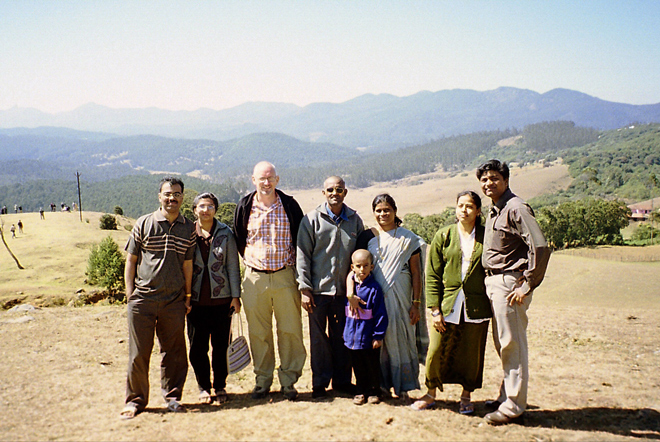
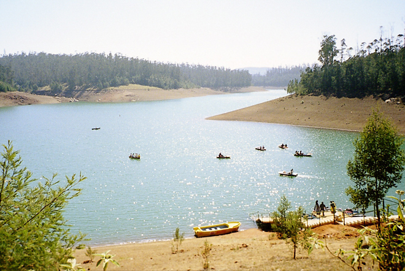
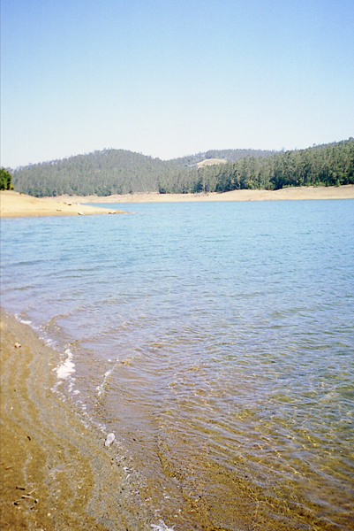
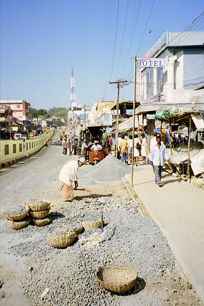
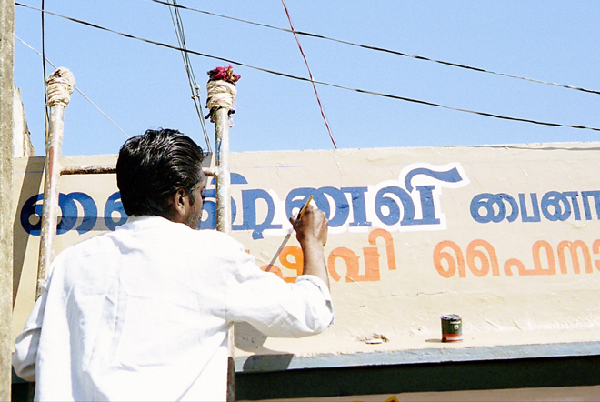
In fact the only wildlife we saw were some aggressive monkeys (one of which stole an orange) and the tail of something fleeing into the undergrowth. It was possibly the most uncomfortable bus I've ever been on (a real 'bone shaker') but nonetheless a memorable day out.
Back in Ooty, we also visited St. Stephen's Church. Built in 1829, St. Stephen's is the oldest church in the Nilgiris. Its huge wooden beams came from the palace of Tipu Sultan in Srirangapatnam - they were hauled the 120km distance by a team of elephants. It was a quiet, peaceful place and the attached cemetery contained the graves of many early pioneers, including John Sullivan, the founder of Ooty.
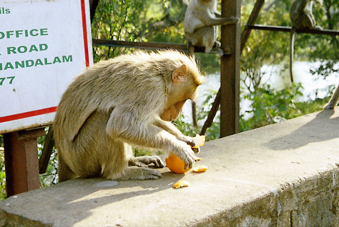
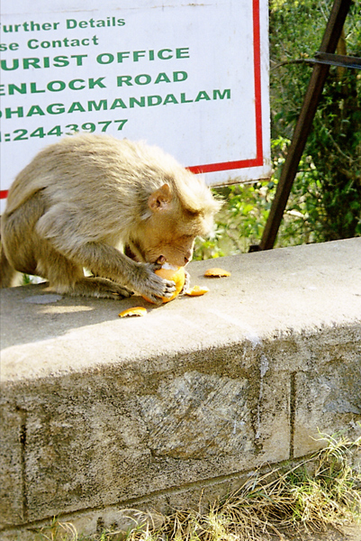
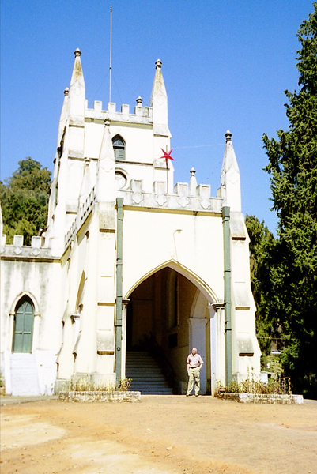